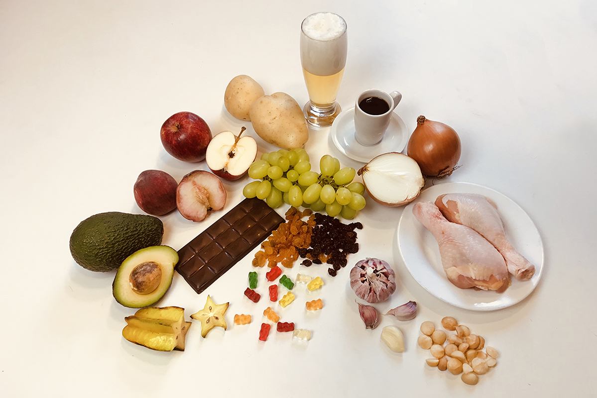

Cães: os melhores amigos do homem. É quase um consenso universal o amor aos amigos peludos e o desejo de distribuir todo o nosso carinho a eles. Cuidar de um cachorro é uma grande responsabilidade, e diversas vezes surgem dúvidas perante o que fazer: como alimentar, cuidar e garantir que meu pet tenha uma vida boa? Nesta página todas essas perguntas serão respondidas.
Ambientação
Cachorros necessitam de um ambiente apropriado e confortável para viver, principalmente levando-se em
consideração seu porte e raça. Um lugar para a realização das necessidades básicas, dormir e para brincadeiras
são indispensáveis quando o assunto é a vida canina. A partir disso listamos 5 características essenciais do
lugar ideal para o seu pet.
Organização:
Assim como dito anteriormente, é necessário que seu cão tenha um espaço onde possa realizar suas necessidades
básicas, dormir, se alimentar, entre outros. A partir da criação destes ambientes básicos, seu animal poderá
viver mais confortavelmente, tendo a residência adaptada para sua vivência. Vale salientar que o lugar para a
higiene deve ser diverso do para alimentação, pois suas proximidades pode desmotivar seu amigo canino a comer.
Acessibilidade:
Para tornar sua casa mais acessível ao seu pet certas adaptações devem ser feitas. Falando-se sobre raças de
porte pequeno, devemos destacar a importância da altura dos móveis, como sofás e camas. Diversas vezes para
alcançar o topo do objeto o animal salta, porém isso pode levar futuramente a prejudicação de suas patas e
coluna. A partir disso, recomendamos que caso seu cachorro deseje subir, as melhores alternativas são a
utilização de mini escadas ou o carregamento do cão até o topo.
Além disso, destaca-se a importância de projetar a casa para a velhice do animal, onde suas necessidades motoras
estão mais delimitadas. Também salientamos a necessidade da altura dos comedouros concordarem com a do animal,
evitando possíveis problemas nas costas posteriormente.
Pisos apropiados:
A adequação do piso de sua casa para o seu pet é muito importante, principalmente quando incluímos as
pautas mobilidade e higiene. O ideal para que seu amigo canino viva confortavelmente são pisos antiderrapantes,
evitando futuros problemas motores, e fácil de limpar, impedindo a proliferação de parasitas.
Tecido e mobília:
Outro ponto a se ressaltar é o material dos tecidos e estofados, que precisam ser resistentes.
Alguns animais costumam arranhar o mobiliário, a dica é preferir sempre tramas fechadas e colocar
mantas de couro nos braços do sofá.
Espaços estimulantes:
Para quem quer garantir o bem-estar e a diversão dos pets mas não consegue dar atenção ou
estar em casa o tempo todo, criar ambientes estimulantes pode ser uma boa saída. Obstáculos,
petiscos escondidos, brinquedos e outras estratégias que estimulam os sentidos podem entreter
o animal por horas.
Segurança:
Alguns cuidados com a segurança são fundamentais: piscinas e banheiras externas de hidromassagem
devem ser cercadas, impedindo o acesso dos pets sem a devida supervisão; produtos de limpeza e
medicamentos sempre devem estar guardados em locais fechados e fora do alcance e jardins devem
conter apenas espécies não tóxicas para os animais.
Alimentação
Restrições:

É recorrente o surgimento de dúvidas em relação à alimentação dos cães. Por vezes desejamos variar o
cardápio, servindo-lhes frutas e verduras, frequentemente misturadas à ração. Porém, essa diversificação
pode colocar em risco não apenas a saúde, mas também a vida de nossos amigos caninos. Por isso, listamos
a seguir 5 alimentos aos quais devem ser evitados na dieta do seu pet.
Abacate:
Embora seja uma fruta deliciosa e rica em proteínas, gordura, açúcares, fósforo e vitaminas, o abacate
é extremamente contra indicado para cães. O alimento possui uma substância chamada “persina”, presente
em sua casca, polpa e caroço, nociva a estes animais. Ainda que algumas raças de cachorro apresentem maior
resistência ao material, a ingestão do fruto pode causar problemas intestinais, como vômito e diarreia.
Uvas:
Quando se trata de uvas, tanto as comuns quanto as natalinas passas possuem elementos tóxicos em suas
estruturas. Sua ingestão pode levar a alterações, como aumento da frequência urinária e da ingestão de
água, por provocar lesões nos rins. Não cogite alimentar seu cão com tal alimento.
Tomate:
Diferente dos dois alimentos citados anteriormente, o tomate pode ser ingerido pelos cachorros,
desde que seja feito um acompanhamento por seus tutores. Quando ingerido em grandes quantidades
pode ser nocivo para eles, sendo a raiz do problema suas folhas e caules. Essas partes possuem
um produto químico chamado solanina, que representa alto risco para os pets, podendo causar,
entre outros problemas, perda de apetite, diarreia, fraqueza, pupilas dilatadas, distúrbios
gastrointestinais e hipersalivação.
Alho, cebola e cebolinha:
Esses três alimentos contém a toxina N-propil dissulfeto, que provoca vômitos, anemias, sangue na
urina, fraqueza, respiração ofegante e frequência cardíaca elevada. Portanto, alimentos com esses
temperos, como o arroz, devem ser evitados.
Chocolate:
Já é do conhecimento de muitos que o chocolate está terminantemente proibido para os cachorros,
mas poucos sabem o verdadeiro motivo. O cacau, assim como o açaí, é composto por teobromina,
provocando estímulo cerebral e aumento da atividade cardíaca. Fora isso, o doce também é composto
por cafeína e é rico em açúcar, que pode deixar seu cão obeso ou diabético.
Recomendações:
Porém, a alimentação dos cães não é apenas baseada em restrições. Ao oferecermos certos
alimentos completamos a dieta do animal, trazendo nutrientes extras. Agora listamos a seguir
5 alimentos que podem ser adicionados na dieta do seu amigo canino.
Maçã:
A maçã é uma fruta rica em vitaminas A e C, além de fibras, que ajudam na digestão do cão.
Porém, vale salientar a importância da remoção das sementes e do miolo antes de oferecê-la
ao seu pet, devido a presença de cianeto nessas partes, substância de natureza prejudicial
aos cachorros.
Cenoura:
A cenoura é rica em fibras e vitaminas, especialmente vitamina A. Além disso, é um ótimo
petisco para cães que gostam de roer, ajudando a manter os dentes limpos e saudáveis.
Banana:
Fruta rica em potássio, vitamina C e fibras, a banana ajuda na digestão do cachorro.
Porém, é importante ressaltar que deve ser oferecida com moderação, especialmente para
pets com tendência a engordar.
Abóbora:
É um vegetal rico em fibras e vitaminas, principalmente a vitamina A. Além disso, a abóbora
pode ajudar a regular o sistema digestivo do cão, aliviando a constipação.
Batata-doce:
É uma fonte de carboidratos saudáveis e fibras. É importante oferecê-la cozida e sem tempero para o
animal; assim como citado nas restrições, temperos como cebola e alho prejudicam o animal.
Cuidados gerais
Cuidar de um animal é uma grande responsabilidade, seu pet precisa de cuidados
especiais. Além disso, é necessário ressaltar que para um desenvolvimento saudável
seu cão precisa de condições básicas para viver. A partir disso, listamos três
tópicos importantes quando se trata de cuidar bem de seu cachorro.
Vacinação:
Vacinar o seu cachorro é muito importante, principalmente em seus primeiros meses de
vida. A vacinação adequada pode proteger os cães de uma ampla variedade de doenças em
potencial, incluindo parvovírus, tosse do canil, hepatite e leptospirose.
Os filhotes geralmente recebem sua primeira série de vacinas por volta das oito às
dez semanas de idade, com outra série depois de duas a três semanas depois, mas os
protocolos variam. Cachorros filhotes não devem entrar em contato com outros cães
não vacinados até que estejam totalmente protegidos.
Exercicios fisicos:
É uma ótima ideia fazer caminhadas com seu cachorro, entretanto, é importante ressaltar
que cães filhotes, especialmente de raças maiores, não devem fazer muito exercício.
Filhotes têm muita energia, mas seus ossos, articulações e placas de crescimento são
moles e podem ser prejudicados pelo excesso de exercício físico.
A regra geral para prática de exercício físico é cinco minutos por mês de idade,
duas vezes por dia. Assim, um filhote de cachorro de 16 semanas precisaria de um
total diário de apenas 40 minutos de exercício.
Socialização:
Os cães têm vários estágios importantes de desenvolvimento, sendo um deles o período de
socialização, que se pensa estar entre as três e as 16 semanas de idade. Dentro dessa
janela de oportunidade, os filhotes precisam ser expostos ao maior número possível de
pessoas, outros animais e situações diferentes.
Deixar de socializar seu animal de estimação pode resultar em um forte medo desses
estímulos mais tarde na vida e, em alguns casos, no desenvolvimento de problemas
de comportamento resistentes. Por isso, atividades como levar o cachorro à casa de
outras pessoas ou ao parque, para passear, são muito importantes nos primeiros anos de vida.